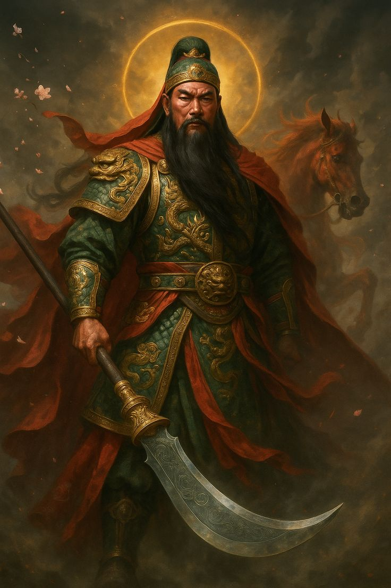
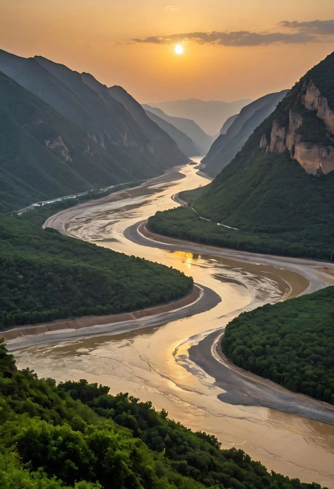
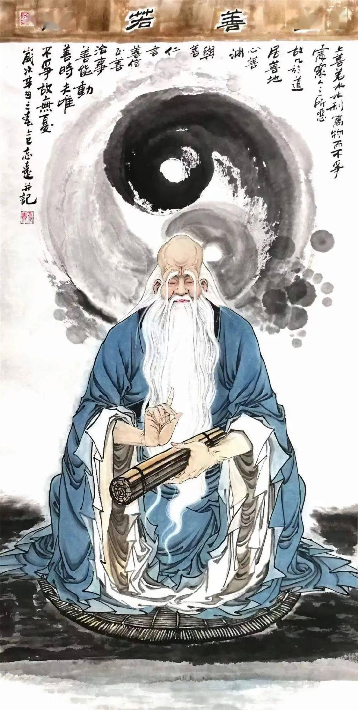
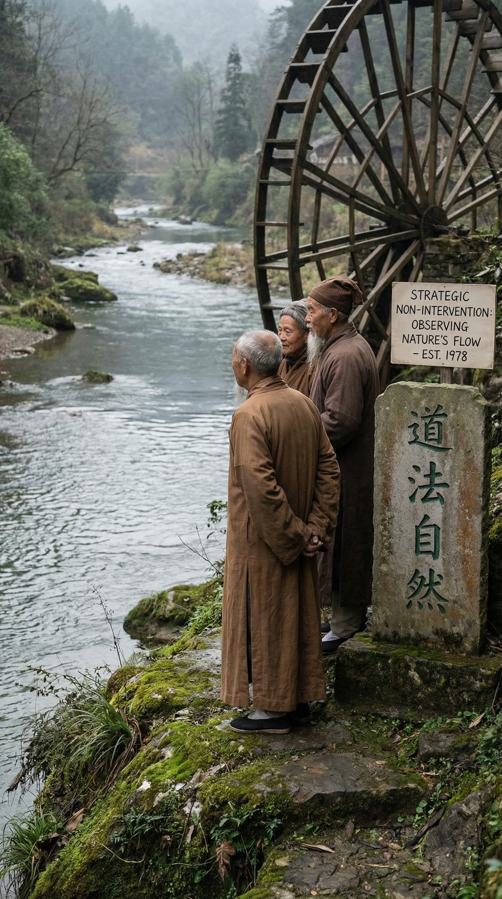

"道法自然" — The Dao follows Nature (Prakriti).
Natural Acceptance & Harmonious Coexistence
A Technical Analysis of the Dujiangyan Irrigation System
Validating the Coexistence (Sah-Astitva) of Material, Plant, Animal, and Human Orders
through 2,200 Years of Ancient Hydro-Engineering
2. Sourish Dey 23051223
3. Adipta Khan 23051643
4. Sougata Roy 2305740
5. Sounak Hazra 23051546
6. Koustuv Gupta 2305543 March 12, 2026
01
"天地与我并生，万物与我为一"
"Heaven, Earth, and I were born together; all things and I are one." — Zhuangzi
Deconstructing Nature: The Four Orders of Coexistence
The inherent design of nature provides a template for harmony. To prove mutually fulfilling coexistence, we must analyze the four distinct yet interdependent orders defined in universal human values studies.
1 · Material Order (Padartha / 石)
The inanimate foundation — soil, water, rock, minerals. Characterized by stability, chemical composition, and decomposition. It carries the memory of geological aeons and provides the stage upon which all life performs.
2 · Plant Order (Ood-bhij / 木)
The biosystem — forests, crops, mosses. The primary energy converter transforming sunlight into biomass and oxygen. It breathes so the world can live, and anchors the soil so the Material Order holds firm.
3 · Animal Order (Jangam / 鱼)
Mobile, conscious life — fish, birds, mammals. Consumers and pollinators in the nutrient cycle. They possess instinctual awareness and physical purposefulness, serving as the living current between orders.
4 · Human Order (Manushya / 人)
The realizing order. Unique capacity for rational thought, value-based choice, and the natural acceptance to live in mutual fulfillment. The only order that can consciously choose harmony — or destruction.
Core argument: human fulfillment is not found in exploitation, but in ensuring our activities are mutually fulfilling to the other three orders.
Coexistence orbit: continuous exchange among Material, Plant, Animal, and Human orders.
02
"水善利万物而不争"
"Water benefits all things and does not compete." — Laozi, Dao De Jing, Ch. 8
The Challenge: Taming the Wild Minjiang River
In 256 BCE, during the Warring States period, the Minjiang River descended violently from the Tibetan Plateau. As it struck the flat Chengdu Plain, the gradient lessened and the river became braided, shifting course with each flood season.
Hydrological Threat
Melting Himalayan snow combined with monsoon rains produced massive sediment loads and flash floods every spring — destroying settlements, drowning crops, and burying fertile soil under metres of debris.
The Orders Under Siege
The violent Material Order (water & debris) annihilated the Plant Order (crops) and threatened the Human Order (villages). The Animal Order was displaced by chaotic, silted flows that suffocated aquatic life.
The Paradigm Shift of Li Bing
Governor Li Bing rejected the conventional "levee war" — fighting water with ever-higher walls. He sought a hydraulic intervention that would use the river's own energy to regulate itself. Not a dam, but a conversation with moving water. This innovation has endured for 2,278 years — the longest-running hydraulic system on Earth.


Flood challenge gallery: the river threat that shaped Li Bing's non-dam solution.
03
"深淘滩，低作堰"
"Dig the channel deep, keep the dykes low." — Li Bing's Sacred Rule, 256 BCE
Hydraulic Engineering: Three Structures of Genius
The Fish Mouth (鱼嘴 Yuzui) (Matsya-Mukha)
An 80-metre, teardrop-shaped levee constructed from giant bamboo cages filled with stones — flexible and seismically resilient. Positioned at a precise 30° angle, it splits the Minjiang into two channels:
- Inner Channel (West): carries ~60% of dry-season water for irrigation.
- Outer Channel (East): primary flood and sediment discharge route.
Its curved geometry induces helicoidal (spiral) flow, using centrifugal force to push heavy sediment into the outer channel — the Material Order self-cleaning without human intervention.
The Flying Sand Weir (飞沙堰 Feishayan) (Renu-Vahini)
A 200-metre low weir that creates a powerful backflow vortex during floods. Like a natural centrifuge, it ejects up to 80% of remaining sediment back to the main river — delivering only clean water to the fertile plains and protecting the Plant Order's soil from salinization and waterlogging.
The Bottle-Neck Channel (宝瓶口 Baopingkou) (Kumbha-Mukha)
A passage carved through solid rock — 20 m wide, 40 m deep, 80 m long. It acts as an automatic flow valve via the Venturi effect, predating Bernoulli by two millennia. Excess water backs up and spills over the Weir. Critically, this is an open system: no wall blocks fish migration, preserving the Animal Order's biodiversity corridors and dissolved oxygen levels.
Hydraulic mechanism sketch: split, flush, and regulate flow through three linked structures.
04
"上善若水。水善利万物而不争，处众人之所恶，故几于道。"
"The highest good is like water. Water benefits all things and does not compete;
it dwells in places that all disdain — and so is close to the Dao." — Laozi, Ch. 8
Governance Rooted in "Following Nature" (Dao · Prakriti-Dharma)
The Philosophy of Wu Wei (无为)
The builders practiced strategic non-intervention — observing the river's flow for years before making a single cut. They followed the Taoist principle of Dao Fa Zi Ran (道法自然): the Dao models itself on what is naturally so. Technology was not imposed upon nature; it was derived from nature's own patterns.
Natural Acceptance in Practice
The engineers viewed the river not as an enemy to be conquered, but as a partner whose character must be understood. Technology was restricted by environmental ethics — the ancient maxim "Tao Controls Technology" meant that the tool must serve life, never dominate it. This is the original "natural acceptance" — an innate human recognition of Sah-Astitva, where fulfillment comes through service, not subjugation.
The Annual Qinghai Ritual (清害)
Every winter, during the low-flow season, workers close the inner channel using temporary bamboo cofferdams and manually dredge accumulated silt. The depth is measured against ancient stone statues of Li Bing placed on the riverbed — the "deep bed" benchmark carved 2,200 years ago. This ritual represents the Human Order consciously participating in the material cycle, resetting the balance each year.
This is not passive conservation. It is active, regenerative stewardship — humans using nature in a way that regenerates it. The most advanced paradigm of technology.


Philosophy and practice gallery: Dao, stewardship, and cyclical maintenance in action.
05
"人法地，地法天，天法道，道法自然。"
"Humanity follows the Earth, Earth follows Heaven, Heaven follows the Dao,
and the Dao follows what is naturally so." — Laozi, Ch. 25
2,200 Years of Synergy: Proof & Contrast
Material Order — Validated
The river's sediment transport regime remains active and balanced. Unlike modern dams that trap silt and starve downstream deltas, the Minjiang's natural mass balance is preserved through self-flushing mechanics.
Plant Order — Validated
The Chengdu Plain became 天府之国 (Tianfu Zhi Guo) — "The Land of Abundance." Clean irrigation water prevents soil salinization. Upstream watershed forests were preserved because the design eliminated the need for destructive engineering.
Animal Order — Validated
Unlike the 60% collapse in freshwater species near conventional dams (WWF data), the Minjiang's open-channel system maintains aquatic migration corridors, dissolved oxygen levels, and genetic exchange across the full river basin.
Human Order — Validated
The society prospered for over two millennia, supporting 5+ million people. The Human Order fulfilled its role not as master, but as the realizing steward maintaining the system's health for all four orders.
Paradigm Contrast: Participation vs. Domination
Balance metaphor: durable prosperity appears when human systems stay aligned with nature.
06
"天人合一"
"Heaven and Humanity are One." — the oldest axiom of Chinese cosmology; akin to Vasudhaiva Kutumbakam.
Dujiangyan: A Living Laboratory of Natural Acceptance
Thesis 1 — Validated
"There is natural acceptance in human beings for mutually fulfilling coexistence."
The engineers and society of Dujiangyan demonstrated this acceptance across 90+ generations. They chose synergy over dominance — proving it is inherent in human potential to be stewards, not exploiters.
Thesis 2 — Validated
"There is provision in nature for harmonious coexistence of all four orders."
The system works because it taps into nature's own provisions — the river's kinetic energy for sediment flushing, the vortex for cleaning, the mountain passage for flow control. It joined nature rather than fighting it.
"The most advanced technology is not that which conquers nature, but that which listens to it.
The Human Order's highest function is to be the steward of this pre-existing harmony."
References & Further Reading
- Huang, B., Hu, X., Tang, L., & Lu, Q. (2024). Governing human-nature harmony in protected area communities. Bulletin of Chinese Academy of Sciences.
- e-Adhyayan. Module on Concord in Nature: Understanding the Four Orders.
- Fu, H. (2020). The Innovative Road to Urban Nature Conservation. Landscape Architecture Frontiers.
- Springer. (2019). Synergetic Evolution of Social and Natural Systems: Ecological Wisdom in "The Land of Abundance."
- Swiss Agency for Development and Cooperation. (2024). Nature Conservation and Local Development Report.
"道法自然"
Thank You
Dujiangyan has stood for over two millennia — living proof that when humans accept their role within nature rather than above it, harmony is not an ideal but an engineering reality.